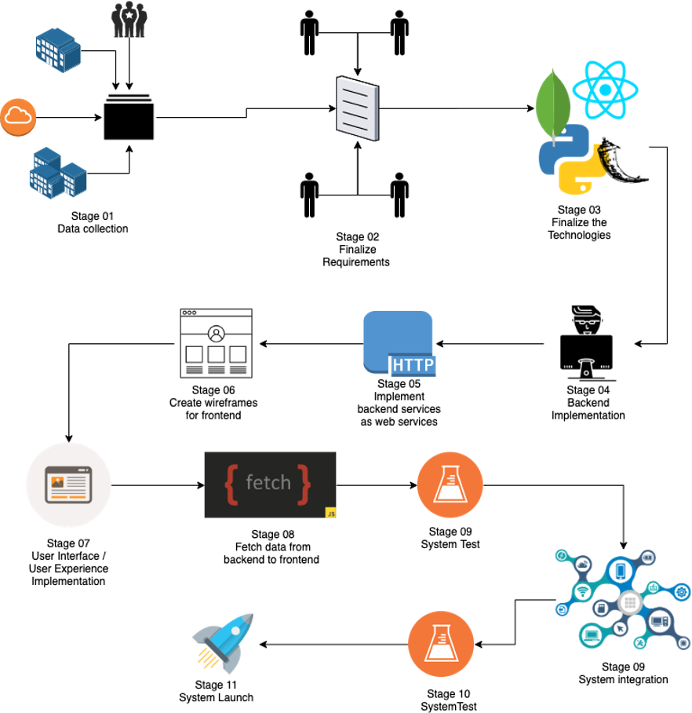

SIS is one such software/tool which can automate the traditional interviewing. The proposed system mainly
works with human voice and writing patterns.
System extracts and converts human language into system understandable text-based inputs.
It would be a greater advantage for the both interviewers to reduce the effort that they have to put in for
select most suitable candidates which qualified enough to work with their organization and as for candidates
Introduction
Smart Interviewing System is one such software/tool which automates the traditional interviewing process
using modern Natural Language Processing techniques and deep learning applications. The system will be
mainly beneficial for interviewers and HR management employees working for different organizations who
conduct technology related interviews. The system works with human voice and writing patterns. The system
converts human language into system understandable text-based inputs, and these are used as inputs in the
automated interviewing process. The system then checks the accuracy of the answers which candidates provided
on the both oral interviews/ technical interviews and written tests. Later, the system automatically
predicts scores for each answer using concepts of the deep learning. Interviewers can reduce the effort that
they have to put in for selecting the most suitable candidates who are qualified enough to work with their
organization. This system checking and evaluating candidate more accurately in every stage of the interview
using advance evaluation parameters than human oriented evaluations. Above process lead system to find more
human errors which critically can be affected to future of the organizations. Because of that, it can be led
organizations to find best human resources comparing to the traditional interviewing process by sacrificing
less time and effort
Abstraction
This application can be used to automate interviews and make fair environment for every candidate who facing
for the interviews.
There are four major research components,
1. Automate oral interviews
2. Automate written interviews
3. Automate candidate ranking
4. Detect personality traits
Background

❮
❯